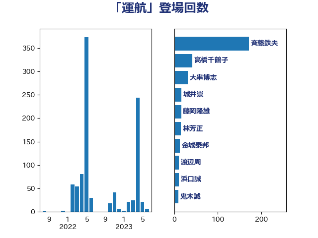

単語「運航」

| 斉藤鉄夫 | 公明党 | 171 回 |
| 高橋千鶴子 | 日本共産党 | 41 回 |
| 大串博志 | 立憲民主党 | 31 回 |
| 城井崇 | 立憲民主党 | 17 回 |
| 藤岡隆雄 | 立憲民主党 | 16 回 |
| 林芳正 | 自由民主党 | 15 回 |
| 金城泰邦 | 公明党 | 13 回 |
| 渡辺周 | 立憲民主党 | 11 回 |
| 浜口誠 | 国民民主党 | 11 回 |
| 鬼木誠 | 立憲民主党 | 10 回 |
| 菅家一郎 | 自由民主党 | 10 回 |
| 三上えり | 立憲民主党 | 9 回 |
| 高橋光男 | 公明党 | 8 回 |
| 大野泰正 | 自由民主党 | 8 回 |
| 渡辺猛之 | 自由民主党 | 7 回 |
| 岸田文雄 | 自由民主党 | 7 回 |
| 岡田直樹 | 自由民主党 | 7 回 |
| 小沢雅仁 | 立憲民主党 | 7 回 |
| 野田国義 | 立憲民主党 | 6 回 |
| 赤嶺政賢 | 日本共産党 | 6 回 |
| 田村智子 | 日本共産党 | 6 回 |
| 松本尚 | 自由民主党 | 6 回 |
| 伊藤渉 | 公明党 | 6 回 |
| 福島伸享 | 無所属 | 5 回 |
| 石井浩郎 | 自由民主党 | 5 回 |
| 漆間譲司 | 日本維新の会 | 5 回 |
| 谷田川元 | 立憲民主党 | 4 回 |
| 西村康稔 | 自由民主党 | 4 回 |
| 神津たけし | 立憲民主党 | 4 回 |
| 浜田靖一 | 自由民主党 | 4 回 |
| 河西宏一 | 公明党 | 4 回 |
| 森屋隆 | 立憲民主党 | 4 回 |
| 島村大 | 自由民主党 | 4 回 |
| 中谷真一 | 自由民主党 | 4 回 |
| 三浦信祐 | 公明党 | 4 回 |
| 鈴木敦 | 国民民主党 | 3 回 |
| 羽田次郎 | 立憲民主党 | 3 回 |
| 笠井亮 | 日本共産党 | 3 回 |
| 稲富修二 | 立憲民主党 | 3 回 |
| 石井苗子 | 日本維新の会 | 3 回 |
| 田名部匡代 | 立憲民主党 | 3 回 |
| 川合孝典 | 国民民主党 | 3 回 |
| 岬麻紀 | 日本維新の会 | 3 回 |
| 山本剛正 | 日本維新の会 | 3 回 |
| 佐藤英道 | 公明党 | 3 回 |
| 中山展宏 | 自由民主党 | 3 回 |
| 赤木正幸 | 日本維新の会 | 2 回 |
| 舟山康江 | 国民民主党 | 2 回 |
| 紙智子 | 日本共産党 | 2 回 |
| 竹谷とし子 | 公明党 | 2 回 |
| 穀田恵二 | 日本共産党 | 2 回 |
| 清水貴之 | 日本維新の会 | 2 回 |
| 池畑浩太朗 | 日本維新の会 | 2 回 |
| 杉本和巳 | 日本維新の会 | 2 回 |
| 新垣邦男 | 立憲民主党 | 2 回 |
| 徳永久志 | 無所属 | 2 回 |
| 後藤茂之 | 自由民主党 | 2 回 |
| 室井邦彦 | 日本維新の会 | 2 回 |
| 太田房江 | 自由民主党 | 2 回 |
| 大島九州男 | れいわ新選組 | 2 回 |
| 塩田博昭 | 公明党 | 2 回 |
| 堀場幸子 | 日本維新の会 | 2 回 |
| 吉田宣弘 | 公明党 | 2 回 |
| 勝部賢志 | 立憲民主党 | 2 回 |
| 伴野豊 | 立憲民主党 | 2 回 |
| 三宅伸吾 | 自由民主党 | 2 回 |
| たがや亮 | れいわ新選組 | 2 回 |
| 高階恵美子 | 自由民主党 | 1 回 |
| 高橋はるみ | 自由民主党 | 1 回 |
| 鈴木貴子 | 自由民主党 | 1 回 |
| 鈴木宗男 | 日本維新の会 | 1 回 |
| 金子恵美 | 立憲民主党 | 1 回 |
| 金子俊平 | 自由民主党 | 1 回 |
| 野村哲郎 | 自由民主党 | 1 回 |
| 酒井庸行 | 自由民主党 | 1 回 |
| 道下大樹 | 立憲民主党 | 1 回 |
| 辻清人 | 自由民主党 | 1 回 |
| 輿水恵一 | 公明党 | 1 回 |
| 谷川とむ | 自由民主党 | 1 回 |
| 角田秀穂 | 公明党 | 1 回 |
| 西田昭二 | 自由民主党 | 1 回 |
| 西村智奈美 | 立憲民主党 | 1 回 |
| 萩生田光一 | 自由民主党 | 1 回 |
| 磯崎仁彦 | 自由民主党 | 1 回 |
| 石井正弘 | 自由民主党 | 1 回 |
| 牧山ひろえ | 立憲民主党 | 1 回 |
| 浅田均 | 日本維新の会 | 1 回 |
| 津島淳 | 自由民主党 | 1 回 |
| 泉健太 | 立憲民主党 | 1 回 |
| 比嘉奈津美 | 自由民主党 | 1 回 |
| 榛葉賀津也 | 国民民主党 | 1 回 |
| 柳ヶ瀬裕文 | 日本維新の会 | 1 回 |
| 柘植芳文 | 自由民主党 | 1 回 |
| 枝野幸男 | 立憲民主党 | 1 回 |
| 松野博一 | 自由民主党 | 1 回 |
| 木村英子 | れいわ新選組 | 1 回 |
| 木原誠二 | 自由民主党 | 1 回 |
| 木原稔 | 自由民主党 | 1 回 |
| 岩渕友 | 日本共産党 | 1 回 |
| 山添拓 | 日本共産党 | 1 回 |
| 山本佐知子 | 自由民主党 | 1 回 |
| 小野泰輔 | 日本維新の会 | 1 回 |
| 國場幸之助 | 自由民主党 | 1 回 |
| 古賀之士 | 立憲民主党 | 1 回 |
| 古川元久 | 国民民主党 | 1 回 |
| 加藤鮎子 | 自由民主党 | 1 回 |
| 加田裕之 | 自由民主党 | 1 回 |
| 伊波洋一 | 無所属 | 1 回 |
| 今枝宗一郎 | 自由民主党 | 1 回 |
| 仁木博文 | 無所属 | 1 回 |
| 中西祐介 | 自由民主党 | 1 回 |
| 中川郁子 | 自由民主党 | 1 回 |
| 三木圭恵 | 日本維新の会 | 1 回 |
| おおつき紅葉 | 立憲民主党 | 1 回 |